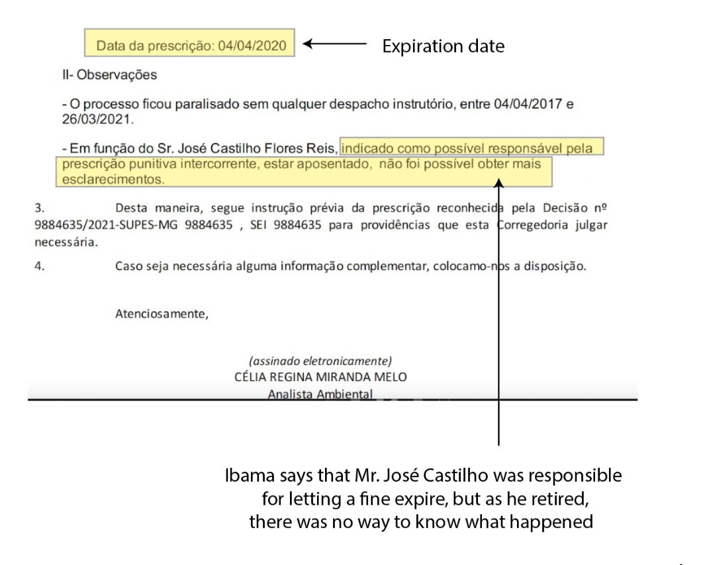
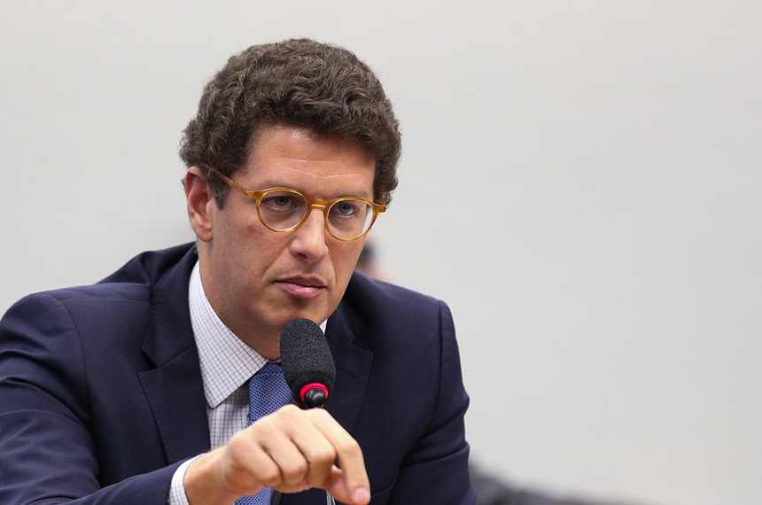

In 2009, the Brazilian state fined an agricultural company for preventing forest regeneration in an area 18 times the size of Central Park in the Amazon Rainforest region in Pará state. Instead of allowing the forest to regrow, as required by law, the company, Agropecuária Santa Bárbara do Xinguara, raised cattle on the land. The Brazilian environmental agency, IBAMA, issued the company a R$ 50 million fine (equivalent to US$ 10 million), the maximum amount that can be charged for a single case.
Their operation was part of a work coordinated by IBAMA in several regions of Pará to reveal deforestation in agricultural areas in the Amazon region. IBAMA inspectors found that the company had bought deforested areas to raise cattle. There were around 20,000 cattle heads at the place of the assessment.IBAMA officials who worked on that operation say the fine had historical importance. "It was the first fine of such a big company. At that time, they were the largest agricultural group in Brazil," said one official, who requested anonymity because he was not authorized to interview.
But this "historical" fine ended up in favor of the company: the fine was never paid and the statute of limitations was recognized by IBAMA last year. After 5 years of no enforcement action, IBAMA lost the right to charge the company.
According to data obtained by the reporter through a freedom of information request, it was one of the most expensive fines to expire in the last 20 years. According to public records, this is just one of the thousands of sanctions for environmental crimes that went unpunished in Brazil for IBAMA's lack of action. At least R$ 1.3 billion (US$ 200 million) in environmental fines has expired since 2000 - and the number per year has been increasing at least e 2017.
Internal documents, data obtained by the reporter and more than 20 interviews with former IBAMA employees and experts show that Brazil is not only not punishing deforestation but, according to the interviewees, companies feel that fines are not a deterrent to criminal behavior as they often expire without enforcement. As a result, some offenders maintain illegal practices for years, contributing to increased deforestation and land grabbing while maintaining business by selling and exporting products such as meat and timber.
In addition to the administrative fine, environmental crimes are also taken to court. In June 2018, federal judge Heitor Moura Gomes, from the Federal Regional Court of the First Region, sentenced Agropecuária Santa Bárbara do Xinguara, demanding they recover the deforested area. Still, the company appealed and is awaiting a final decision from the court. In practice, this means that, for now, it can continue using the land for farming. Bruno Valente, a federal prosecutor in Pará with extensive experience in environmental crimes, says it is common for cases like this to last a decade or more in court. "The consequence is bad, as it does not discourage offenders."
Agropecuária Santa Bárbara Xinguara presents itself as one of the largest in the sector in Latin America. In 2019, the British newspaper The Guardian reported that they were supplying JBS, the world's largest meatpacking company, which sells beef to virtually the entire world. Pará, where the farm is located, is the Amazon state with the highest rate of deforestation. AgroSB, the company's current name, acknowledged by email that there had been environmental damage in the area but that deforestation had occurred before the farm was purchased and that it was invaded by the Landless Rural Workers Movement (MST), a well-known Brazilian social movement, at the time of the notice. “The best thing for AgroSB (and the State) would be for IBAMA to have analyzed this fact quickly and declared the nullity of the fine,” AgroSB wrote in a comment.
IBAMA itself is unclear as to how the fine expired. According to an internal memo, the agency is still trying to find out who was responsible for letting the fine expire more than a decade after it was issued. "It feels like we're trying to dry ice," says the geographer and environmental analyst Govinda Terra, an official at IBAMA and one of the directors of an association of employees of the agency in the Federal District, Asibama. "It's not just the value of the fine that is lost. It's the work of whoever carried out the inspection, what was spent on helicopters, personnel, and working time. It's impossible to measure the damage."
An IBAMA employee who worked on the administrative fines and miliar with the AgroSB case said that the company's strategy is common. "It is modus operandi to enter the administrative process and wait for the fine to expire. From the moment the company was fined until now, it has already profited much more. This is an emblematic case of lack of punishment, which generates more injustice."
A growing problem whose dimensions are still unknown
By the end of 2022, at least 2,297 fines may expire and the State may fail to collect around R$ 298 million, according to an internal estimate by IBAMA in June. This number shows part of the problem, as the agency admits that more than 90,000 fines are still in the queue to be processed and their statute of limitations status is unknown. The figures may also vary ording to the methodology used, as there are several reasons why a fine might expire.
Four steps are necessary for the environmental infraction to be punished: identifying the environmental offense, filing, judging and collecting the fine. If the State takes five years or more to carry out any of these steps or goes three years without "moving" the process, the fine expires and no money can be collected, although the company still has to restore the degraded area through a lawsuit.
More than 10,000 environmental fines are applied annually in Brazil. But, according to IBAMA's diagnosis, the current investigation and judgment team cannot handle this volume of work, so the paperwork accumulates and is transferred to the following year, a situation that sometimes continues until the fines expire. An internal estimate by the agency says that almost 40,000 fines could expire by 2024.
Lack of personnel and frequent changes in legislation are the reasons for the problem, according to an internal assessment by IBAMA and the sources consulted. That's why experts say that environmental crimes investigated now and those in the past can go unpunished. "People have the impression that the State is incapable of punishing," says Felipe Nunes, a researcher at the Federal University of Minas Gerais (UFMG) and one of the authors of a study that shows that fewer environmental fines are being applied and judged by the current administration of IBAMA.
One concern of the agency is millionaire fines, such as that of AgroSB, which take officials several months of work. "Big companies prefer to spend on a lawyer and fight in court," said former IBAMA president Suely Araújo, who held the position until the first month of the Jair Bolsonaro government in 2019 and now works as a public policy consultant for Observatório do Clima, a climate change advocacy group. IBAMA published an ordinance in July that tries to "organize" the fines judgment, prioritizing the most expensive ones.
Experts point out that one of the reasons helping to increase the risk of expired fines is the so-called “reconciliation hearing,” a new stage before the fine judgment in which IBAMA offers the violator to settle instead of going to trial. Created in 2019, the process ended up delaying the fine process in the first few months. Data from the environmental agency indicate that there was the lowest number of judgments of environmental infractions at least since 2013 in the agency.
IBAMA recognized these hearings as a challenge in an internal assessment, mentioning them in its internal memorandum in a section on "threats to the sanctioning process." "The reconciliation hearing was a policy that came from top to bottom, without listening to the officials. A lot of energy was spent. If they had prioritized the work to improve judgment of fines, we wouldn't have so many fines expiring", says Terra, from Asibama.
President Jair Bolsonaro himself has been critical of environmental fines several times. He was fined for fishing in a protected area in January 2022 and has been saying since he was elected that he wants to end the “fine industry” in Brazil. His own fine expired in 2019 and the agent who wrote it was removed from his post that same year.
There are more mechanisms to avoid expired fines nowadays than 10 years ago, such as digitizing public records across the federal government, which helps with paperwork. But revenue loss from expired fines is increasing. Records show that at least 649 environmental fines expired last year, the agency’s biggest recognized financial loss since 2017, after adjusting for inflation of R$144 million, driven by AgroSB’s case.
“It would be very important that the treatment of fines be done more strategically,” said Andreia Bonzo Araujo Azevedo, Deputy Director of the Climate and Safety Program at the Igarapé Institute.
Internal records show that IBAMA officially recognizes the problem. "Administrative deficiencies compromise the investigation, not generating the deterrent effect that the fine should have," says a document produced last year.
When a fine expires, the agency needs to open an investigation to identify the person responsible for it. But this is not always possible. In some cases, the agency cannot even find the agent responsible for judging the company, as in the case of AgroSB. Because of the delay, there are officials involved in the procedures who have already retired.
IBAMA authorities say that they need to hire 300 people to fill administrative positions and start a "task force" to avoid losing more fines.
Raoni Rajão, professor of Environmental Management and Social Studies of Science at the Federal University of Minas Gerais (UFMG), says that the changes promoted by the government Bolsonaro exacerbate the lack of personnel at IBAMA and create an artificial obstacle to inspection. Therefore, more fines will be lost".
IBAMA did not respond to requests for an interview after a month.
Fine expired in the past, crimes in the present
One of the companies that benefited from expired fines, Tradelink, has been involved in a Federal Police investigation related to the illegal export of timber to the US since last year.
In March 2009, the agency fined the lumber company R$161,000 for purchasing 4,500 cubic meters of sawn ipe wood (one of the most valued in Brazil) and others through a shell company.
The wood purchased at the time was seized and, according to the agency, "aged in appearance, grayish in color" until the agency imposed the fine, in fact, in 2018. Due to the time lapse, the punishment expired, and the company did not have to pay the sanction.
Tradelink returned to the spotlight last year after a Federal Police operation began investigating whether Minister Ricardo Salles and the current president of IBAMA, Eduardo Bim, were part of an alleged scheme to facilitate the smuggling of wood into the United States.
Former minister of Environment Ricardo Salles. Source: Agência Senado
Experts believe that many environmental crimes could have been avoided if IBAMA had acted correctly at all stages of the sanctions. “The statute of limitations on these fines is a way of guaranteeing criminal environmental conduct. It is encouraging environmental crime", said Daniele Galvão, analyst of the Center for Climate Crime Analysis (CCCA), a non-profit organization. "We have encountered several cases in which deforestation is associated with illegal logging, often destined for export to the European market."
Petrobras: even with notice from subordinates, fines of BRL 10 million have expired
An IBAMA agent had "forgotten" to deal with at least four fines against Petrobras, Brazil's state oil company and one of the richest companies in the world, leaving R$10 million in fines to expire between 2017 and 2018, despite of having been notified by his subordinates. The case was found by an agency's internal investigation that started in 2018.
Petrobras received the largest amount of environmental fines in the country, with more than 2,000 sanctions since 2009, according to IBAMA data, which total more than R$ 1 billion. Still, only about 15% of those fines have been paid. The company was constantly mentioned in the interviews for this story as an example of the environmental agency's difficulty in guaranteeing the payment of fines.
According to the internal investigation, an IBAMA oil exploration coordinator in Rio de Janeiro "deliberately withheld" several infraction notices against the state oil company.
According to the document, the agent presented messages sent to the coordinator asking him to work on the fine, "showing that there was no negligence, but the intention to keep the situation as it is".
The officials who investigated the case also found several administrative problems at that IBAMA unit, such as a "lack of documental control of the process" and a lack of control over employees' schedules.
The case was also reported to the Federal Prosecutors Office (MPF), which opened an investigation. The official left the position he held at the same time as the complaint was filed in 2018 but continues to work at IBAMA. The case was shelved in 2021, according to the MPF, for the "absence of indications of functional failure on the part of the coordinators."
About this project
This project is the final work I did for my master's degree in data journalism at Columbia University. The story started during the Writing with Data classes, when we were tasked with producing a short story with charts.
I was already monitoring the problem of environmental fines in Brazil after reading an article in the Brazilian newspaper Folha de São Paulo and getting new information through the Access to Information Law (the Brazilian FOIA). Since then, I have sent more than 50 requests for information to IBAMA and other federal agencies involved with the problem.
After obtaining the data, I spoke with two experienced journalists who cover environment and environmental crimes, and they referred me to sources to interview. These sources pointed me to other sources, and in the end, I had interviewed over 20 people - although not all of them were used in the story and same went off the record. This final piece is a story with more emphasis on specific cases than data itself, though the data still have relevance in context as they show that the problem is getting worse.
The documents obtained help to prove that this is not an isolated or unique problem and that the agency itself recognizes the seriousness of the situation.
Sources
You can find the data and code here.
Interviews: Suely Araujo - Consultant at Observatório do Clima and former president at IBAMA (2016-2018) / Andrea Bonzo Araujo Azevedo - Deputy director at Programa de Clima e Segurança at the Igarape Institute (Instituto Garapé) / APIB - Press office / Murilo Abreu - Public Prosecutor's Office in Pará (press contact) / Felipe Nunes - Researcher ar UFMG / Daniele Galvão - Legal analyst at CCCA - Center for Climate Crime Analysis / IBAMA - Brazil's federal environmental agency / Raoni Rajão - professor in Social Studies of Science at the Department of Production Engineering at UFMG / Agropecuária Santa Bárbara do Xinguara (company) - Press Office / Bruno Araujo - Federal Public Prosecutor (Procurador Federal) - Public Prosecutors Office in the state of Pará (MPF-PA) / Govinda Terra - Asibama (Ibama workers union) representant at Distrito Federal state